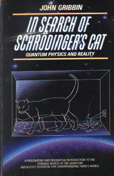

In Search of Shrödinger's CatQuantum Physics and Realityby Larry Niven
publisher: Bantam Doubleday
Non-fiction, 275 pages | 
(book cover art, Copyright ©1984 John and Mary Gribbin)
Used with Permission. |
Return to the Book MenuPrevious|Next
Description:
An introductory tour of the beginnings of quantum mechanics.
This book is well known as an excellent introduction to the material, and
it answers questions about the atom, lasers, antimatter, superconductors,
time travel, and an ill-fated cat.
Recommended for: Future physicists, chemists or engineers
who might use these fields; students who want to get a leg up on one of
the last sections of the course.
Note: You only need to read the first 9 chapters.
Did-you-read questions:
Deadline: February 1, 2005.
These should be easy questions, but you should have the questions ready and keep an eye out during your reading. Each question should be answered with 1-2 sentences.
Note: these questions are not probably not the most important part of the book! Your essay will not have to cover these questions!
- What was the ultraviolet catastrophe?
- Ernest Rutherford said, "All science is either ________ or ________."
- Which two artists held concerts that reminded the author of bosons and
fermions?
- Who was "the first quantum chef"?
- Why are there two cats on the cover?
Report Questions:Deadline: Peer Review Session on February 8, 2005; paper due February 10, 2005.
You should write a 3 - 4 page essay on one of the following questions. Your essay should include examples and references to the book, unless otherwise specified. Page number references are sufficient for citing material from the primary book. If you use outside materials, cite your sources in full. If you would rather write on a different topic, you may, but clear it with Mr. Howe or Ms. Sullivan first.
- When you read this book, did it feel like enjoyable reading, or does it
read like a textbook? Beyond the fact that it covers a lot of (possibly)
confusing ideas, what did the author do to make the book easy or hard to
read?
- What idea or ideas do you wish the author had spent more time on? Pick
one idea, concept or theme that you saw. Explain your interpretation of
what the author meant, and indicate what questions he left open for you.
- Were there any areas in the book that you thought you knew about before
you started reading, but you found out something new or something that
disagreed with what you thought? Describe this process. Has your thinking
changed, or do you disagree with the author?
- Pick three or four ideas in the book that the author did not directly link
together, and explain how you think they are connected.
Graphic and Presentation:
Deadline: February 21 - March 3, 2005.You will give a 10 minute presentation on both of the following:
- Convince your peers that they should (or should not) read this book. (This may include a brief summary of the book.) Give examples of what was cool or worthwhile in the book, and what you got out of it (or didn't).
- Describe a (realistic) science idea that you learned about in this book, citing information from at least 2 external sources (other than the dictionary). If you would like help choosing or understanding an idea from your book, you are invited to come talk to Mr. Howe or Ms. Sullivan.
Note: This presentation should not be just a reading of your paper!Along with this presentation, you should have a graphic that will go with it. A Power Point presentation is recommended, but if you have a special idea for a something else, such as a model, an original video presentation, or a well done drawing/ painting/ sculpture/ etc., you may do so, provided it involves a similar level of effort and polish. Speak to Mr. Howe or Ms. Sullivan first if you are considering an alternate graphic format to the Power Point.
Return to the Book MenuPrevious|Next